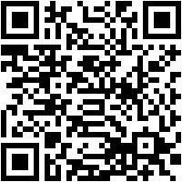

¡Excelente trabajo, equipo! Han superado todos los retos y activado los sensores de proximidad, tacto, color y sonido. Es hora de ver el resultado.
Activación Final por RA
¡Este es el código de activación final! Abran la cámara de su celular y apunten al código QR para proyectar el robot en su entorno.
Al escanear, sigan las instrucciones en pantalla y presionen "Ver en tu espacio".
Reflexión Final: La Fusión de los Sentidos
El robot que ves en 3D es el resultado de la integración. No podría moverse sin chocar, interactuar con objetos, seguir una ruta o reaccionar a una orden si sus sensores no trabajaran en equipo.
Al igual que los humanos, un robot es verdaderamente útil cuando todos sus "sentidos" se fusionan para comprender y actuar en el mundo.